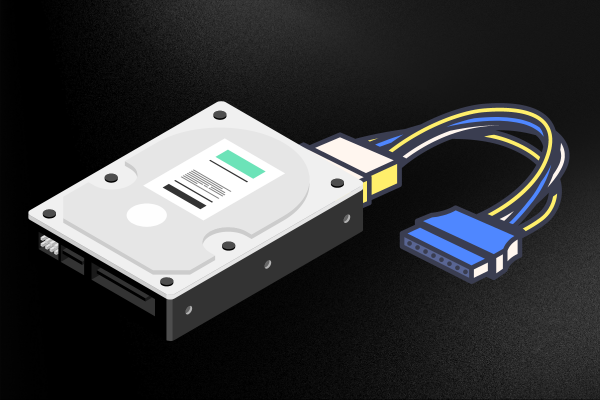

1° Passo
Prepare a placa mãe. Se quiser montar um dispositivo mais popular, use uma placa mãe compatíveis com Intel i3, i5 ou i7.
2° Passo
Instale a CPU no soquete da placa mãe. Você deve escolher a CPU correta para a placa mãe escolhida, instalando-a de acordo com as instruções dadas. Cuidado para não instalar a CPU de modo incorreto. Não apenas o computador não funcionará, mas fazê-lo pode gerar um curto-circuito e danificar a placa mãe.
3° Passo
Conecte o cooler da CPU à placa-mãe.
4° Passo
Anexe os módulos da memória RAM aos slots correspondentes. A placa mãe deve ter colunas de slots com duas ou três seções que variam em comprimento. Assegure-se de que os pinos das placas RAM se alinhem aos do conector da placa mãe. Não misture os slots para memória RAM com os slots PCI. Os últimos são, em geral, mais largos.
5° Passo
Abra o gabinete e monte uma fonte de energia compatível com o tipo M-ATX. Conecte todos os pinos aos drives e à placa mãe.
6° Passo
Anexe a lâmina traseira da placa mãe ao gabinete e confira as posições de montagem. As instruções da placa mãe devem definir sua posição.
7° Passo
Posicione adequadamente a placa mãe no gabinete.
8° Passo
Monte o disco rígido e conecte-o à fonte de energia e à placa mãe. Deve haver conexões separadas para a fonte e a placa mãe. No caso de discos rígidos SATA, é preciso remover o jumper.
9° Passo
Ligue as conexões SATA aos drives e aos conectores USB e os interruptores do gabinete à placa mãe. As instruções do gabinete e da placa mãe deverão indicar onde conectar os cabos.
10° Passo
Conecte o conector ATX de 20 ou 24 pinos e o conector de controle da fonte de energia à placa mãe.
11° Passo
Monte o drive de DVD-ROM. Após conectar o cabo ATA ao dispositivo, encaixe-o na fonte de energia.
12° Passo
Finalmente, selecione um sistema operacional compatível e siga as instruções de instalação.